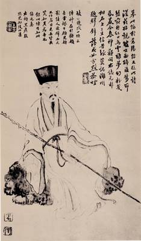
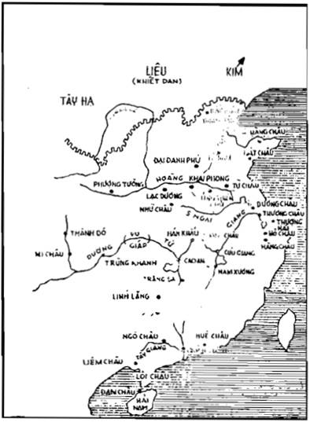

Trong eBook trước, tôi đã sửa lỗi và bổ sung eBook do bạn Quantam thực hiện, trong đó tôi chép thêm đoạn cụ Nguyễn Hiến Lê tự nhận xét về cuốn Tô Đông Pha (trích trong Hồi kí Nguyễn Hiến Lê, Nxb Văn học, năm 1993, trang 447-448) mà tôi tạm đặt nhan đề là “Thay lời giới thiệu”.
Trong eBook mới này tôi dùng bản scan Tuyển tập Nguyễn Hiến Lê II – Sử học[1] (bản scan do Hoaithu84 cung cấp), trong đó có cuốn Tô Đông Pha (In theo bản của NXB Văn hoá, Hà Nội, 1992) để sửa lỗi thêm và bổ sung 5 hình (trong đó có 1 bản đồ).
Xin chân thành của ơn 2 bạn Quantam và Hoaithu84 và xin được chia sẻ cùng các bạn.
Goldfish
Tôi đặt Tô Đông Pha vào loại Văn học, nhưng cũng có thể đặt vào loại Gương danh nhân cùng với mấy cuốn Einstein, Bertrand Russell, Henry David Thoreau (Một lương tâm nổi loạn) được – (Mấy cuốn đó giống nhau ở điểm mỗi cuốn viết riêng về một nhà). Tôi thích họ Tô nhất vì tấm lòng của Tô gần với tôi hơn cả.
Tôi rất phục tài của Tô, yêu tinh thần bình dân của Tô, mong học được đức khoan hoà, phóng khoáng của Tô. Tôi ước ao được sống cuộc đời nghệ sĩ của ông ở Hàng Châu, ở Lâm Cao, được thả thuyền trên Tây Hồ mà ngắm đủ thập cảnh, uống rượu ngâm thơ với bạn trên dòng Xích Bích.
Mới mấy hôm trước đây, vì thời tiết thay đổi, vừa bật đèn lên ăn cơm thì mối bay ra cả đám, tôi phải tắt đèn, ra ngồi ăn cơm thầm ngoài sân (ở Long Xuyên), rồi về khuya cóc kêu inh ỏi bên phòng, tôi phải trở dậy, kiếm viên thuốc ngủ và nhớ lại hồi ông bị đày ở đảo Hải Nam, sống cực khổ mà vui vẻ, trào phúng được. Về mọi phương diện, ông đều đáng làm thầy tôi.
Tôi thường đọc lại những đoạn ông ở Hàng Châu, Lâm Cao, Hải Nam đó, và đoạn ông ngồi thuyền qua hẽm Vu Giáp, trên sông Dương Tử để lên Kinh.
Yêu ông, tôi cũng yêu mấy nhân vật kỳ dị thời ông nữa: một học giả bỏ ra 25 năm, viết một bộ sử vĩ đại (Tư Mã Quang), một triết gia sống khắc khổ (Trình Di), một đạo sĩ đi mấy ngàn cây số để thăm ông, yêu cả Vương An Thạch nữa, tại sao không? Nhà cách mạng đó ngây thơ, có thể khùng khùng, nhưng đâu có bỉ ổi! Còn nàng Triêu Vân nữa mà bạn của Tô gọi là Phật bà Quan Âm!
Tóm lại tôi yêu cả xã hội Trung Hoa thời ông: Nó chia rẽ, bất công, suy về kinh tế, võ bị, nhưng về văn học, triết học, mĩ thuật lại rất tiến. Hễ văn minh thì không hùng cường, hễ hùng cường thì không văn minh. Hy Lạp thời Périclès văn minh rực rỡ mà bị Macédoine chiếm.
Năm 1974 tôi đã sửa lại Tô Đông Pha, thêm vài đoạn (một đoạn về cảnh Tây Hồ), nhà Cảo Thơm chưa kịp tái bản thì Sài Gòn được giải phóng, phải đóng cửa. Vài bạn kháng chiến rất thích cuốn đó.
(Trích Hồi kí Nguyễn Hiến Lê)

(do Lý Long Miên vẽ)[2]
Trong lịch sự văn học, thời nào ta cũng thấy một hai gia đình được cái vinh dự có vài ba người đồng thời xuất hiện rực rỡ trên văn đàn; hoặc cha với con như Tư Mã Đàm và Tư Mã Thiên, Sái Ung và Sái Diễm ở Trung Hoa, cha con Dumas và cha con Viên (Tôn Đạo, Hoàng Đạo, Trung Đạo) ở Trung Hoa, anh em Goncourt ở Pháp, ba anh em Nguyễn Tường (Tam, Long, Lân) ở Việt Nam; có khi cả cha con anh em cùng nổi danh một thời như gia đình họ Tào (Tháo, Phi, Thực) ở Trung Hoa, gia đình họ Phan Huy (Ích, Chú, Ôn: em của Chú) ở Việt Nam. Nhưng theo tôi, vinh dự lớn nhất phải nhường cho họ Tô đời Tống Trung Quốc.
Suốt đời Đường và đời Tống, từ đầu thế kỷ thứ VII đến cuối thế kỷ XIII, nghĩa là suốt bảy thế kỷ, Trung Hoa có tám văn hào lớn nhất (bát đại gia), thì riêng họ Tô đã chiếm được ba rồi: Tô Tuân (l009-1066), Tô Thức (l037-1101) và Tô Triệt (l039-1112), còn năm nhà kia là Hàn Dũ, Liễu Tôn Nguyên đời Đường, Âu Duơng Tu, Vuơng An Thạch và Tăng Củng đời Tống, đồng thời với “tam Tô” (ba cha con họ Tô).
Bát đại gia đó là tám nhà nổi tiếng nhất về cổ văn, nhưng trừ Tăng Củng, nhà nào cũng có tài về thơ, phú và người có tài nhất cả về cổ văn lẫn thơ, phú là Tô Thức. Ông không phải là sử gia hay tiểu thuyết gia, nên không lưu lại những tác phẩm dài như Sử ký của Tư Mã Thiên hoặc Thủy hử của Thi Nại Am, ông chỉ làm thơ, phú, viết những tản văn ngắn ngắn, vậy mà gom cả lại cũng thành một bộ toàn tập đồ sộ, khoảng một triệu chữ, nếu dịch hết ra tiếng Việt thì không dưới ba ngàn trang. Riêng về thi, từ, ông có tới một ngàn bảy trăm bài, lượng không thua Lý Bạch, Đỗ Phủ, mà thần tuy xét chung không phiêu dật, kì đặc như Lý, không chua xót và đạt tới mức nghệ thuật tuyệt cao như Đỗ, nhưng vừa khoáng đạt, tự nhiên vừa đẹp mà hùng, đáng đứng đầu các thi nhân đời Tống. Còn cổ văn của ông thì ai cũng nhận rằng trong bát đại gia, không ai địch nổi, hễ ông hạ bút là thành văn, không lập ý trước, cứ đưa một hơi, tới lúc vào thấy phải ngừng thì ngừng, gợi cho ta cái cảm giác như “hành vân, lưu thủy”[3] vậy, nhã thú đặc biệt như “tiếng chim mùa xuân, tiếng dế mùa thu” hoặc “tiếng vượn trong rừng”, “tiếng hạc trên không”, đến nỗi Âu Dương Tu phải khen rằng hôm nào mà nhận được một bài văn hay một bài thơ của ông thì vui sướng suốt ngày, còn vua Thần Tôn đương bữa ngự thiện mà đưa đôi đũa lên, quên gắp thức ăn thì ai cũng đoán ngay được là mải đọc văn của Tô Thức.
Vậy hào quang ông chói lọi vào bực nhất trên văn đàn, thi đàn Trung Quốc. Lại thêm ông viết đẹp vẽ khéo, mở đường cho một phái họa mới, phái “thi nhân họa”. Ông không phải là triết gia, nhưng đã đem triết lý của Phật, Lão vào trong thơ văn, áp dụng chủ trương thân dân của đạo Khổng và triết lý từ bi của đạo Phật vào việc trị dân, đào kinh đắp đập chống thiên tai, cứu sống hằng vạn dân nghèo, lúc rảnh rang thì ngao du sơn thủy, tìm cái thú trăng thanh gió mát như môn đệ của Lão Trang.
Danh vọng cao nhất thời mà tính tình lại bình dân; có thời cày ruộng lấy, cất nhà lấy, sống y như một lão nông. Giao thiệp với hạng người nào, từ nhà vua tới các đại thần, chủ quán, tu sĩ, bần dân, ông cũng tự nhiên, thành thực, không hề ngượng nghịu, cách biệt. Ông lạc quan, khoáng đạt, nên trong cuộc đời rất đỗi chìm nổi của ông, khi lên được những địa vị cao nhất, làm thầy dạy học cho vua, quyền hành như một tể tướng ông không lấy làm vinh, không gây bè gây đảng để bám lấy địa vị, trái lại lúc nào cũng sẵn sàng xin đổi lấy một chức quan nhỏ ở ngoài; mà khi gặp những cảnh đắng cay nhất, bị giam suýt bị xử tử rồi bị đày ra đảo Hải Nam, một miền hồi đó rất man rợ, ông cũng không lấy làm nhục, vẫn vui vẻ sống với thổ dân và ngâm câu này của Khổng Tử: “Hà lậu chi hữu?”[4]
Ông nóng tính và có óc trào phúng, làm thơ diễu cợt cả những ông lớn, nên một số người ghét ông, hại ông, nhưng ông không hề thù oán ai cả, việc xong rồi, không để bụng nữa. Ông bảo thấy điều gì bất bình thì xua đi như xua ruồi đậu trên thức ăn, thế thôi.
Vì thiên tài ông trác việt mà tư cách ông cao, nên dân chúng đương thời và cả những thời sau, kính mến ông hơn hết thảy các văn sĩ khác đời Tống. Hồi về già, ông đi ngang qua một miền nào là dân chúng rủ nhau đi đón, xin ông vài chữ làm kỷ niệm, nhờ vậy mà ngày nay người ta còn giữ được nhiều bút tích của ông. Một lần trời nóng quá, ông ở trần đánh một giấc dưới gốc cây trong sân một ngôi chùa, một nhà sư đếm được bảy nốt ruồi trên lưng ông, đâm hoảng, cho ông là vị Văn tinh trên trời giáng xuống. Như vậy đời ông đã thành một huyền thoại như đời Lý Bạch đời Đường.
Thời đại của ông (thế kỷ XI) là một thời rất đặc biệt: văn minh Trung Hoa đạt tới cái mức rất cao về triết học cũng như về văn học, kiến trúc, hội họa, công nghệ (đồ sứ), nhưng về kinh tế và võ bị lại rất suy nhược, bị các dân tộc Liêu, Tây Hạ ở phía bắc uy hiếp, nhà Tống phải chịu chiến phí rất nặng, lại phải nộp thuế cho họ hàng năm để được yên ổn, cho nên quốc khố rỗng không, tình thế nguy ngập, các nhân tài trong nước hầu hết có tâm huyết, tìm cách cứu vãn, người thủ cựu, kẻ canh tân; triều đình lúc theo cựu pháp, lúc theo tân pháp, gây ra biết bao cuộc thăng trầm, xáo trộn mà rồi rốt cuộc dân Trung Hoa cũng mất một nửa giang sơn, nhường phương Bắc cho dân tộc Kim mà lùi xuống phương Nam, dưới sông Dương Tử. Tô Đông Pha vừa là danh sĩ, vừa đóng một vai trò chính trị quan trọng nên gặp nhiều nỗi gian nan, đau lòng, và chép lại đời ông thì gần như phải chép lại trọn lịch sử thời Bắc Tống. Vì vậy trong cuốn này, ngoài ba cha con họ Tô, chúng tôi còn nhắc tới nhiều nhân vật khác như Tư Mã Quang, Âu Dương Tu, Trình Hạo, đặc biệt là Vương An Thạch, Lữ Huệ Khanh... những người trong phe đối lập với Tô Đông Pha.
Như vậy độc giả vừa biết được đời của ông, vừa hiểu thêm tình hình văn hóa, xã hội, chính trị thời đó nữa.
Tài liệu chúng tôi rút phần lớn trong hai bộ:
- The Gay Genius của Lin Yutang (Lâm Ngữ Đường)[5], John Day Company, New York – 1947.
- Tô Đông Pha tập (3 cuốn) - Thương vụ ấn thư quán 1958. Trong cuốn thượng bộ này có chương Tống sử bản truyện trích đoạn sử đời Tống chép về Tô Đông Pha: non 8.000 chữ, (sử quan thời đó chép kĩ lưỡng thật.)
Ngoài ra chúng tôi tham khảo thêm các cuốn:
- Giản minh Trung Quốc thông sử của Lữ Chấn Vũ, Nhân dân xuất bản xã - 1956,
- Trung Quốc văn học sử, Nhân dân văn học xuất bản xã – 1957.
- Vương An Thạch của Đào Trinh Nhất, Tân Việt 1960.
- Trente Siècles d’Histoire de Chine của Roger Lévy, Presses universitaires de France - 1967.
Lời các nhân vật trong sách, chúng tôi đều căn cứ vào sử mà chép, tuyệt nhiên không tiểu thuyết hóa. Lời nào có giọng hơi mới thì chỉ tại chúng tôi không kiếm được nguyên văn chữ Hán mà đành phải dùng bản tiếng Anh của Lin Yutang. Thật lạ lùng, một cuốn sách có giá trị như cuốn The Gay Genius khảo về một văn hào bậc nhất của Trung Hoa mà không được người Trung Hoa dịch lại.
Saigon, ngày 3. 9. 69
N.H.L.

Bản đồ Trung Hoa thời Tô Đông Pha
(1037-1101)
[1] Tôi không hiểu tại sao ông Nguyễn Q.Thắng sắp cuốn Tô Đông Pha và cuốn Bertrand Russel vào loại sử học.
[2] Vì bản scan khá mờ nên tôi thay bằng hình đăng trên trang http://ilofen.blogspot.com/2012/01/blog-post_12.html. (Goldfish).
[3] Lời Tô Đông Pha: Tác văn như hành vân lưu thủy, sơ vô định chất, đãn thường hành ư sở đương hành, chỉ ư sở bất khả bất chỉ. [Nguyên văn chữ Hán: 作文如行雲流水, 初無定質, 但常行於所當行, 止於所不可不止. (Goldfish)].
[4] Sách Luận ngữ, chương Tử Hãn chép: Khổng Tử có lần chán vì thi hành đạo của mình ở Hoa Hạ không được, muốn lại ở một miền mọi rợ. Có kẻ hỏi ông: “Quê mùa quá, ở sao cho nổi?”. Ông đáp: “Quân tử cư chi tắc hóa, hà lậu chi hữu?” nghĩa là: Người quân tử ở đó thì cải hóa phong tục đi, có gì mà quê mùa?”.
[5] Các bạn vào trang sau đây để đọc Online hoặc để tải bản PDF, EPUB, …: https://archive.org/details/TheGayGenius_985. (Goldfish).